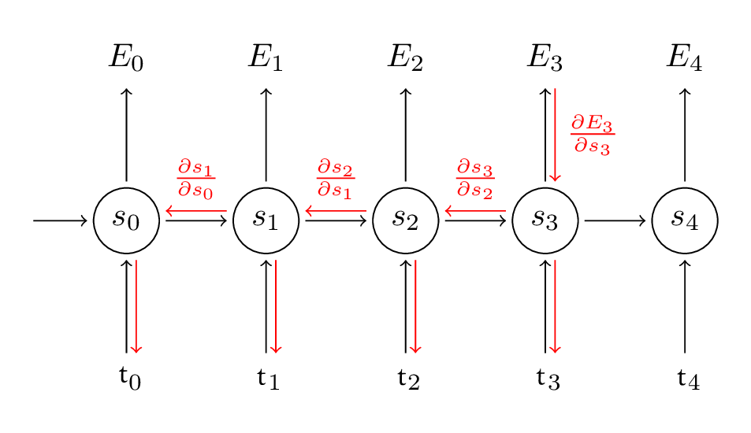

Theory and Implementation of RNN
FORWARD LEARNING
Training a RNN is similar to training a traditional Neural Network. Let’s get concrete and see what the RNN looks like.

Then, the forward calculation for each step will be exactly same as traditional neural networks:
BACKPROPAGATE THE LOSS
To train, we will use the backpropagation algorithm, but with a little twist. Because the parameters are shared by all time steps in the network, the gradient at each output depends not only on the calculations of the current time step, but also the previous time steps.

For example, in order to calculate the gradient at t=3, we would need to backpropagate 3 steps and sum up the gradients.
This is called Back propagation Through Time (BPTT). Be aware of the fact that vanilla RNNs trained with BPTT have difficulties learning long-term dependencies (e.g. dependencies between steps that are far apart) due to what is called the vanishing/exploding gradient problem, which is the next section. There exists some machinery to deal with these problems, and certain types of RNNs (like LSTMs) were specifically designed to get around them.
CALCULATING THE LOSS
To train our network we need a way to measure the errors it makes. We call this the loss function L, and our goal is find the parameters W, V and W that minimize the loss function for our training data. A common choice for the loss function is the cross-entropy loss. If we have N training examples (words in our text) and C classes (the size of our vocabulary) then the loss with respect to our predictions O and the true labels y is given by:
The formula looks a bit complicated, but all it really does is sum over our training examples and add to the loss based on how off our prediction are.